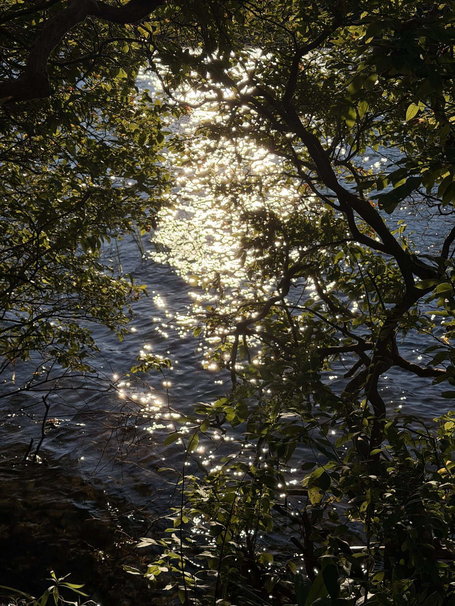
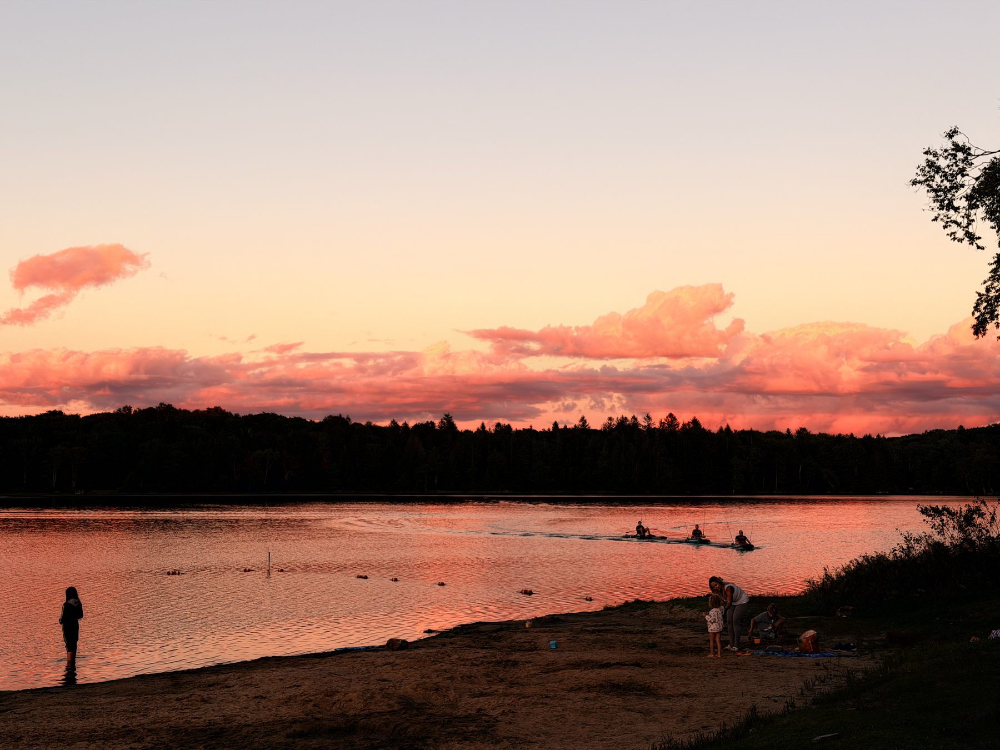
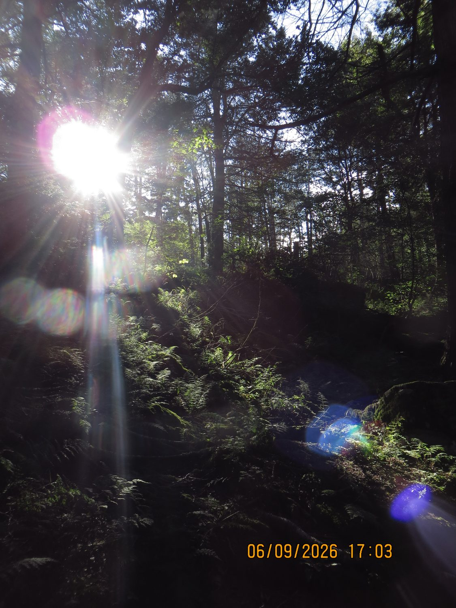
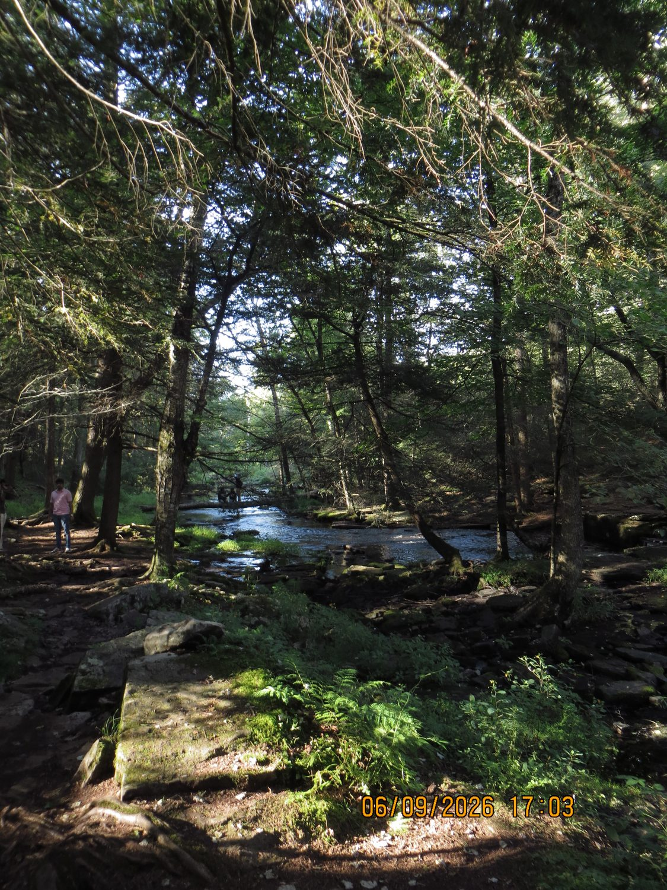
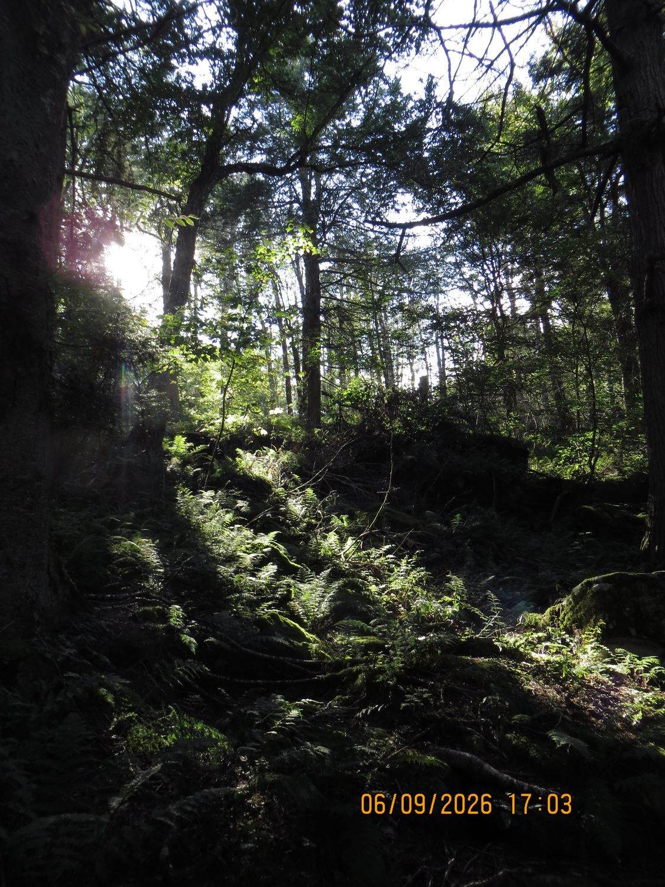
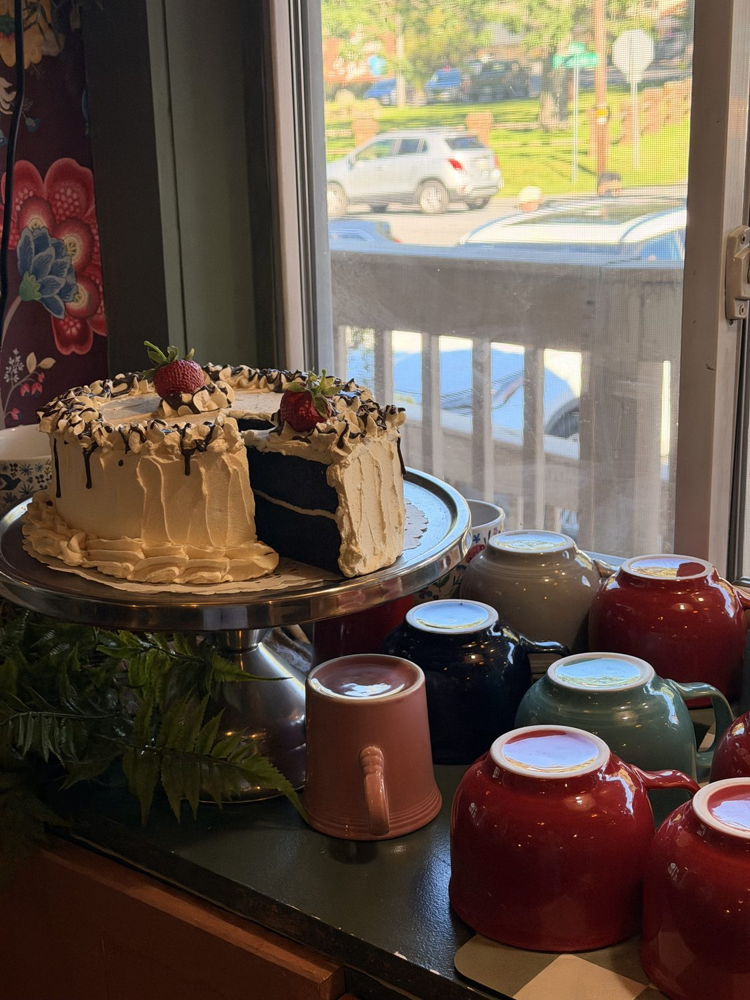

the water was doing that thing
the kind of light you have to stop and look at
a little junk drawer of everything i love looking at. no people — just the world, being lovely.

the water was doing that thing
the kind of light you have to stop and look at

the sky went completely pink
for about four minutes, and then it was gone
and what if it all works out?

sun through the ferns
timestamp and all — straight off the little digicam

a creek worth the walk
it just kept going, greener the deeper we went
everything is beautiful when you look at it with love

deep in the green
the light comes through in little pieces

cake in a window, golden hour
the mugs lined up like they were posing
i used to think i needed something big. turns out it was all the small stuff.